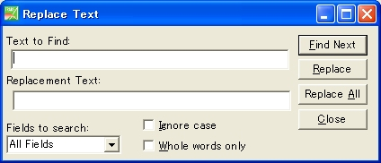

Felix Manual
3.4 Edit Mode
You can use Edit Mode to edit records displayed in the Memory and Glossary windows, and have those results reflected in the memory and glossary databases. Editing in the windows is very similar to editing in an ordinary word processing application, making it much easier to manage your memories and glossaries.
3.4.1 Entering and Leaving Edit Mode
3.4.2 Editing and Formatting Text
3.4.3 Search and Replace
3.4.1 Entering and Leaving Edit Mode
Enter Edit Mode
To enter Edit Mode, from the View menu, select Edit Mode. Alternately, use the Ctrl+E keyboard shortcut while the window to edit is in focus.
You can now begin editing records. While you are in edit mode, the Edit Mode menu item will be checked.
Leave Edit Mode
To leave Edit Mode, from the View menu, select
Edit Mode.
Alternately, use the Ctrl+E keyboard shortcut while the window
to edit is in focus.
Any edits you have made to the displayed entries will be reflected in the corresponding database.
3.4.2 Editing and Formatting Text
A full range of text-formatting features is available for the source, translation, and context fields. In addition to common keyboard shortcuts such as Control-B for bold and Control-I for italic, you can select the Font command from the Format menu to set the font information for the current selection.
3.4.3 Search and Replace
You can search and replace text while in Edit Mode.
Find Text
-
While in Edit Mode, use the Ctrl+F keyboard shortcut.
NB: This keyboard shortcut is context-sensitive; when you are not in Edit Mode, it will call up the Find Memory/Glossary Entry dialog.
-
The Find Text dialog appears:

Fill in the appropriate search conditions.
Text to Find: The text you wish to find Fields to search: The fields you wish to search. All Fields Search all text in the window Context Fields Limit your search to text in Context fields Source Fields Limit your search to text in Source fields Trans Fields Limit your search to text in Trans fields Ignore case Ignore case for your search Whole words only Only match whole words. For instance, if you entered "bet" in Text to Find, the search will retrieve "bet" but not "better." Find Execute the search Close Close the Find Text dialog window. - When you are finished setting up your search parameters, click Find. If the search found a match, clicking Find again will find the next occurrence of your search term.
- When you are finished searching, click Close.
Replace Text
-
While in Edit Mode, from the Edit menu,
select Replace.
Alternately, use the Ctrl+H keyboard shortcut.
NB: The Replace feature is only enabled in Edit Mode.
-
The Replace Text dialog appears:

Fill in the appropriate search conditions.
Text to Find: The text you wish to find Replacement Text: The replacement for the found text Fields to search: The fields you wish to search. All Fields Search all text in the window Context Fields Limit your search to text in Context fields Source Fields Limit your search to text in Source fields Trans Fields Limit your search to text in Trans fields Ignore case Ignore case for your search Whole words only Only match whole words. For instance, if you entered "bet" in Text to Find, the search will retrieve "bet" but not "better." Find Next Find the next occurrence of the search term. Replace Replace the current match with the replacement text. Replace All Replace all occurrences of Text to Find with Replacement Text in the search fields. Close Close the Replace Text dialog window. -
When you are finished setting up your search parameters, click
Find. If the search found a match, clicking
Find again will find the next occurrence of your search term.
Clicking Replace will replace that match with the replacement
text, and search for the next match.
Click Replace All to replace all occurrences of Find Text with Replace Text in the search fields.
- When you are finished searching and replacing, click Close.